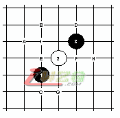
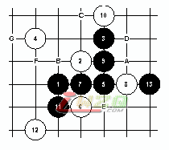
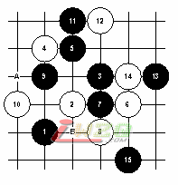
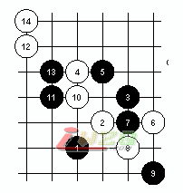
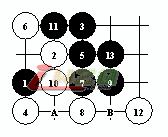
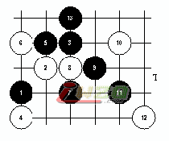

长星介绍
#1 长星介绍 作者：有志青年 发表时间：2008-4-3 8:30:33
长星是颠峰开局，在24种开局中，要求的是掌握了22种开局后才可以学习流星开局，流星开局后才是长星开局，在国内的比赛中，即便偶尔有人敢走这开局，也会被对手变成疏星开局，我的印象是97、98年时，国内的比赛中有过长星开局，那时大家对开局没有太多的认识，只把他当成和其他开局一样的一个开局来下，那时国内的棋手知道和国外棋手的差距主要是对开局的认识，所以就想了个办法，由国内一批最强的棋手各自研究某一个开局，然后再在一起交流心得。当时给我选的就是长星，也因此我在长星开局上曾经有过一段很长时间的研究，大概1年多不到2年的时间，之后在和国外棋手交流中，我在多次使用中发现对手经常会对我的开局很惊讶，多次询问后才知道原来这个开局是颠峰开局。那之后，大概是98年初时，我彻底放弃了这个开局。在我的研究过程中，我也确实研究出了一些这个开局中的变化，并在实战中取得了不错的成绩，但事实是没哪个变化是我搞明白的，即便是我自己研究的变化，很多时候也不知道为什么，越深入的研究越发现自己的无知，这个开局对当时的我来说还是太难，即便是在我鼎盛时期，我也不认为我到了能研究这个开局的程度，那时我也只是开始研究流星而已。
下面发的图中，白4是个弱防变化，事实上，在这个开局中，白棋实战很少选择这个点，因为这个开局本身就是白好下，且定式变化的选择权利大多在白棋手中，白实际上是可以控制局面的，所以根本没必要用一些弱的变化来骗黑棋，如果不会下可以变疏星吗。

长星开局在过去的15年是十分流行的，直到现在很多人都认为这个开局十分的难。 根据过去的理论，白棋具有很大的优势，但黑棋的进攻仍然具有很大的危险性。

这个4是十分有趣的，在以前的书中很少提及这个 4。这个5是1个很强的点。到最后是黑胜。13 后无防。If 6-7 then 7-6, 8-A, 9-B. If 6-9 then 7-A, 8-6, 9-C, 10-13, 11-D. If 6-E then 7-6, 8-A, 9-F, 10-G, 11-H.

这个和前1个4不同，因为它限制了黑棋的攻击范围。黑5的选择有5-5，5-B，5-8，5-6。 5-B虽然通D3开局，但这样会使局面很艰难。
对于11-14 或者11-12 活3攻击并不能带来胜利。
现在这个局面应该是黑所能达到的最好的。

如上图所示，如果黑９反向，将处于被动，这对黑棋是十分不利的，白棋将进行攻击．在上图白棋在这样狭窄的局面仍然可以利用上面的优势取得胜利．
结论是这个４在一定程度上通４－１０．

这个4暴弱，这个5很强确定了黑的胜利。If 6-7 then 7-6. If 6-A then 7-11, 8-6, 9-B.

对于这个４的另１个５如上图．其他８和１０将很快输掉．１３后绝杀．if 14 在７和１１中间，则１５盖６后ＶＣＴ．
［ 小小亦默 于 2011-7-26 0:36:58 时花20金币送鲜花一朵］
#2 Re:长星介绍 作者：笨蛋020 发表时间：2008-4-3 18:52:15
太少了#3 Re:长星介绍 作者：越狱行辕 发表时间：2008-6-13 18:32:00
有没有终结版发一个#4 Re:长星介绍 作者：小小亦默 发表时间：2011-7-12 12:39:39
版主 有机会向你学习一下长星，觉得蛮难下好的，有几个4超难下，很难控盘，如果想下激烈点，那么对方的棋会有很大机会，一般的进攻很难借到棋，而局部的进攻效果又不会很好，困惑中，比如慢棋系统中我对手下的这个4
=======上图对应的爱五子棋谱代码如下，以便你拆解：========
h8i9j10g9j8j7j9i8i10h10
======================================================
#5 Re:长星介绍 作者：掌棋宣传员 发表时间：2011-7-12 16:51:44
不止1个人跟我说过:遇见长星果断变疏星...于是浩如烟海的长星定式都杯具了.#6 Re:长星介绍 作者：黄药师 发表时间：2011-7-12 17:31:45
考古学继续！！！！！